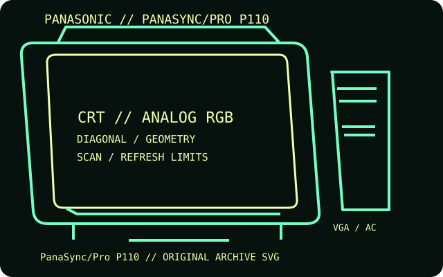

[ INDIVIDUAL COMPONENT // DISPLAYS ]
Panasonic PanaSync/Pro P110
A large multiscan Panasonic color monitor from the PanaSync professional desktop line.

IDENTIFICATION: Match the complete model and regional suffix on the rear label. Published CRT timing limits do not guarantee a particular used unit's condition; verify the tested host, cable and displayed mode.
Specifications
| Catalog subcategory | CRT displays |
|---|---|
| Exact product / family | Panasonic PanaSync/Pro P110 |
| Tube diagonal & image geometry | 21-inch-class CRT, approximately 20-inch viewable diagonal, 4:3 image. OSD adjustments cover raster size, position and geometry; use the manual's full timing table for exact mode and region. |
| Resolution & refresh | Maximum 1600 × 1200 at up to 92 Hz; this is a multiscan display, so both horizontal scan and vertical refresh must fall inside its manual limits. |
| Video inputs | One analog 15-pin D-sub VGA/SVGA RGB input; no digital video input. Some host or cable combinations may require explicit sync compatibility. |
| Power | 140 W maximum operating consumption and below 5 W in power-save mode. The cited operating instructions cover US/Canada units; match the AC voltage/frequency to the rear nameplate. |
| Host compatibility | Compatible with analog RGB PCs and workstations that output the monitor's supported multiscan timings. Digital-only GPUs require active conversion to analog VGA. |
Identification and compatibility notes
Panasonic documentation is titled PanaSync/Pro P110 and regional labeling may vary. This entry does not assume other PanaSync models share its timings.
Record the rear-label model, regional voltage rating, video connector used, source timing, adapter chain, visible image area and geometry/convergence condition. CRTs contain hazardous high-voltage circuits and heavy components; internal service belongs to qualified technicians.
Manufacturer documentation and sources
- Panasonic — PanaSync/Pro P110 operating instructionsPanasonic operating instructions for connection and operation.
- Panasonic — PanaSync/Pro P110 manual archiveArchived manual scan used for the model-specific technical reference.